AppendixD: More RNNs, LSTMs#
UBC Master of Data Science program, 2023-24
Instructor: Varada Kolhatkar
Lecture plan, imports, LO#
Imports#
import sys
from collections import defaultdict
import torch
import torch.nn as nn
from torch.nn import RNN
import matplotlib.pyplot as plt
import numpy as np
import pandas as pd
pd.set_option("display.max_colwidth", 0)
Learning outcomes#
From this lecture you will be able to
Broadly explain character-level text generation with RNNs;
Specify the shapes of weight matrices in RNNs;
Carry out forward pass with RNNs in
PyTorch;Explain stacked RNNs and bidirectional RNNs and the difference between the two;
Broadly explain the problem of vanishing gradients;
Broadly explain the idea of LSTMs at a high level;
Carry out forward pass with LSTMs in
PyTorch;Explain the shapes of input, output, hidden state and cell state in LSTMs;
Broadly explain numericalization, batching, and padding in text preprocessings;
Explain the motivation to use
torchtext.
Attributions#
This material is heavily based on Jurafsky and Martin, Chapter 9.
LSTM motivation#
Problems with RNNs#
In practice, you’ll hardly see people using vanilla RNNs because they are quite hard to train for tasks that require access to distant information.
Despite having access to the entire previous sequence, the information encoded in hidden states of RNNs is fairly local.
Problem 1#
Consider the examples below in the context of language modeling.
The students in the exam where the fire alarm is ringing are really stressed.
The flies munching on the banana that is lying under the tree which is in full bloom are really happy.
Assigning high probability to is following alarm is straightforward since it provides a local context for singular agreement.
However, assigning a high probability to are following ringing is quite difficult because not only the plural students is distant, but also the intervening context involves singular constituents.
Ideally, we want the network to retain the distant information about the plural students until it’s needed while still processing the intermediate parts of the sequence correctly.
The hidden layer and the weights that determine the values in the hidden layer are asked to perform two tasks simultaneously:
Providing information useful for current decision
Updating and carrying forward information required for future decisions
Problem 2: Vanishing gradients#
Another difficulty with training RNNs arises from the need to backpropagate the error signal back through time.
Recall that we learn RNNs with
Forward pass
Backward pass (backprop through time)
Computing new states and output in RNNs
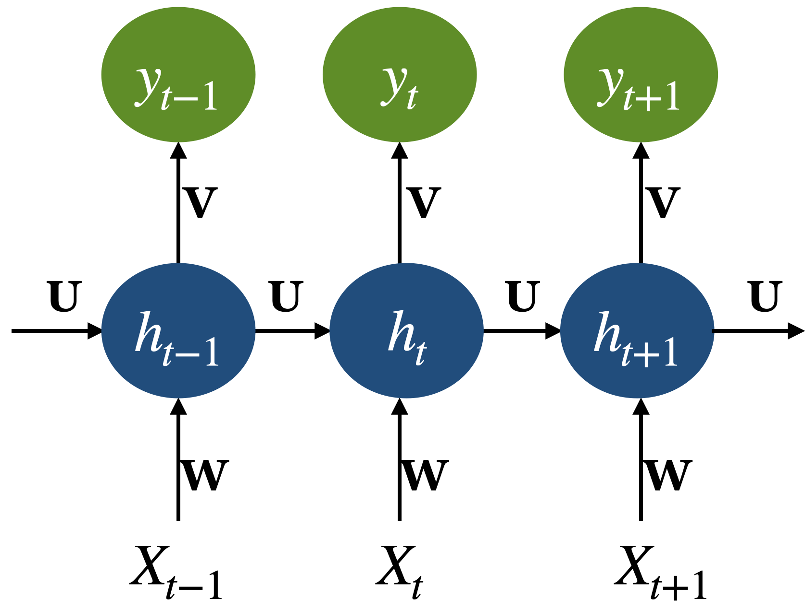
Recall: Backpropagation through time
When we do backprop with feedforward neural networks
Take the gradient (derivative) of the loss with respect to the parameters.
Change parameters to minimize the loss.
In RNNs we use a generalized version of backprop called Backpropogation Through Time (BPTT)
Calculating gradient at each output depends upon the current time step as well as the previous time steps.

So in the backward pass of RNNs, we have to multiply many derivatives together, which very often results in
vanishing gradients (gradients becoming very small and eventually driven to zero) in case of long sequences
If we have a vanishing gradient, we might not be able to update our weights reliably.
Only able to capture short-term dependencies, which kind of defeats the whole purpose of using RNNs.
To address these issues more complex network architectures have been designed with the goal of maintaining relevant context over time by enabling the network to learn to forget the information that is no longer needed and to remember information required for decisions still to come.
One of the most commonly used such models are
The Long short-term memory network (LSTM)
Gated Recurrent Units (GRU)
Let’s look at some example applications of LSTMs.
LSTM for image captioning#
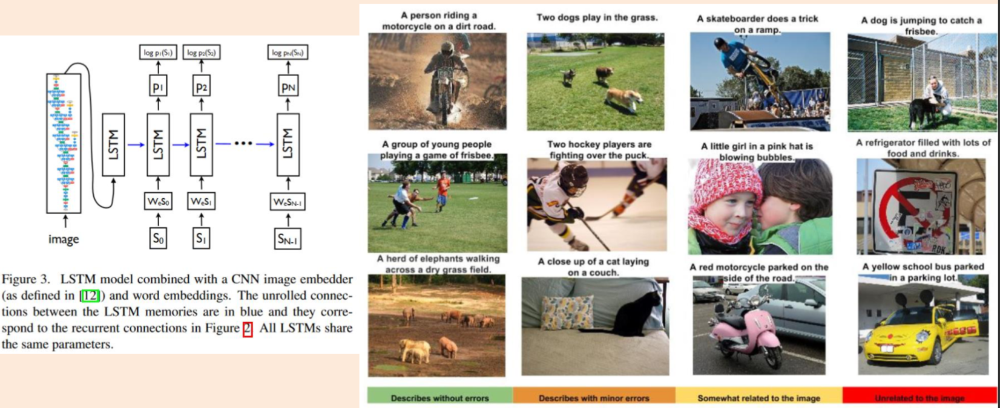
(Credit: LSTMs for image captioning)
We were barely able to catch the breeze at the beach , and it felt as if someone stepped out of my mind . She was in love with him for the first time in months , so she had no intention of escaping . The sun had risen from the ocean , making her feel more alive than normal . She 's beautiful , but the truth is that I do n't know what to do ...
LSTMs for video captioning#
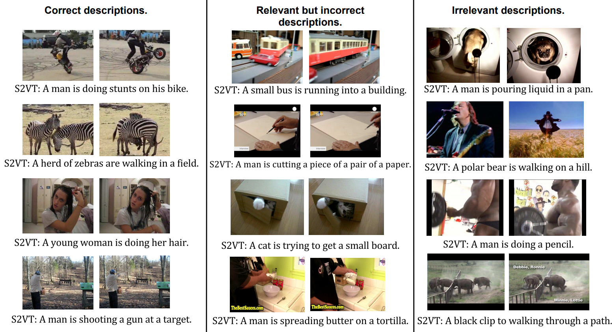
(Credit: LSTMs for video captioning)
LSTMs for executing Python programs#
In 2014, Google researchers built an LSTM that learns to execute simple Python programs!

(Credit: Learning to execute)
Long short-term memory networks (LSTMs)#
Recommendation: Go through these notes once to get a general idea of LSTMs. But try not to get bogged down in all the details.
I want you to get the general intuition of these models so that you have a general idea of their purpose and how they work.
Long Short Term Memory networks (LSTMs)#
Invented in 1997 by Hochreiter and Schmidhuber.
Designed so that model can remember things for a long time (hundreds of time steps)!
Simple (Vanilla) RNN#
In a simple RNN, we have a series of these repeating modules.
How does the information flow in one cell of RNN?

(Credit: Colah’s blog)
Long Short Term Memory networks (LSTMs)#
In an LSTM, the repeating module is more complicated.
LSTMs add an explicit context layer to the architecture for context management.
It’s connected to the hiddent layer via specialized neural units which selectively control the flow of information using gates.
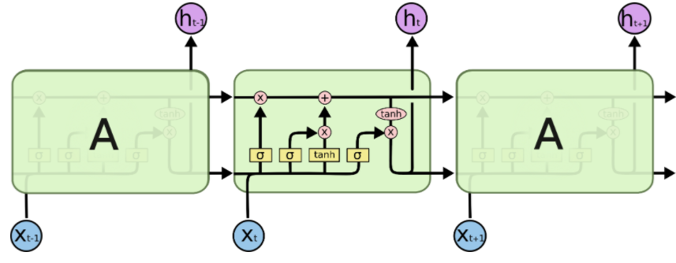
(Credit: Colah’s blog)
LSTMs: Controlling the flow of information using gates#
LSTMs divide context management into two sub problems: removing information no longer needed from the context and adding information likely to be needed for later decision making.
The information is added and removed through a structure called gates.
The gates share a common design pattern: each consists of a feedforward layer followed by a sigmoid activation function, followed by a pointwise multiplication with the layer being gated.
The sigmoid layer pushes its output to either 0 or 1, deciding how much of each component should be let through.
Combining this with pointwise multiplication has the effect of a binary mask; the values that align with 1 in the mask are passed through unchanged while the values corresponding to lower values are erased.
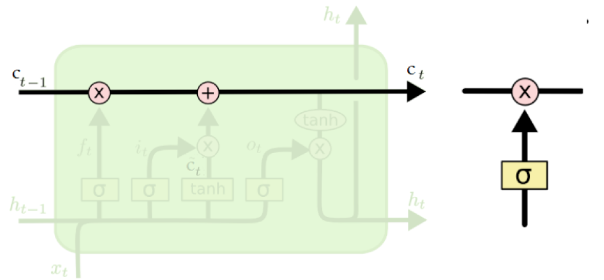
(Credit: Colah’s blog)
LSTMs: The core idea#
The core idea in LSTMs is using a context or cell state (memory cell)
Information can flow along the memory unchanged.
Information can be removed or written to the cells regulated by gates.
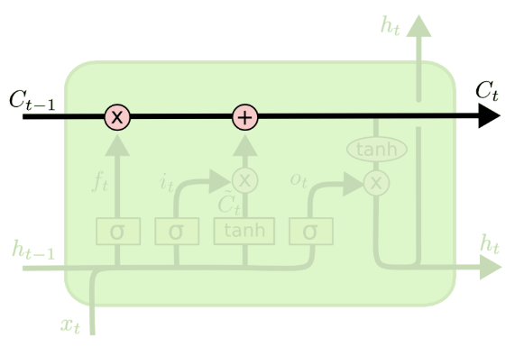
(Credit: Colah’s blog)
How does LSTM work?#
Four operations: forget, store (input), update, output
(Credit: Colah’s blog)
Forget operation#
The purpose of this gate is to delete information from the context that is no longer needed.
A sigmoid layer, forget gate, decides which values of the memory cell to reset.
Decides what part of the history is worth forgetting.
\(f_t = \sigma(W_fh_{t-1} + U_fx_t + b_f)\)
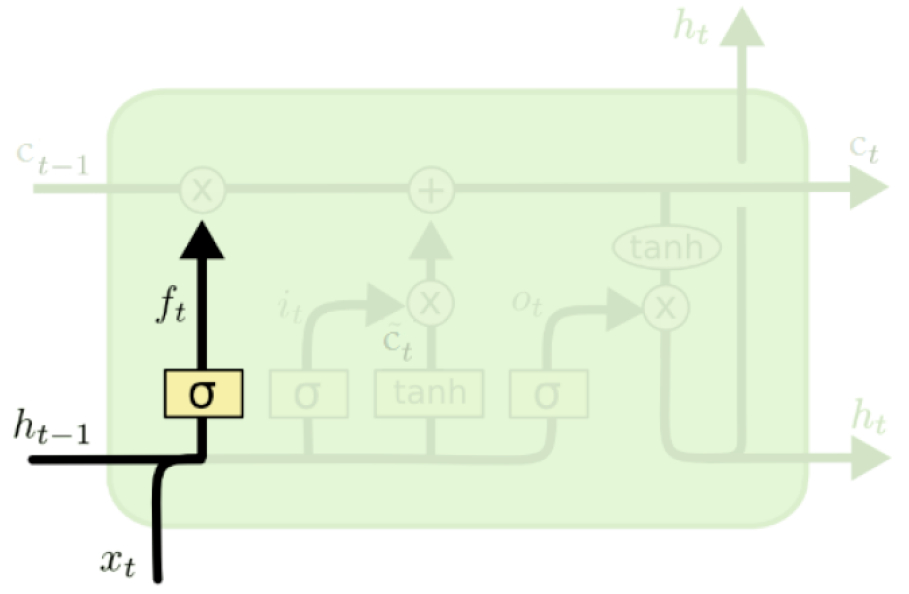
(Credit: Colah’s blog)
Store operation#
Decides what part of the new information is worth storing.
Two parts:
A sigmoid layer, input gate.
\(i_t = \sigma(W_ih_{t-1} + U_ix_t + b_i)\)
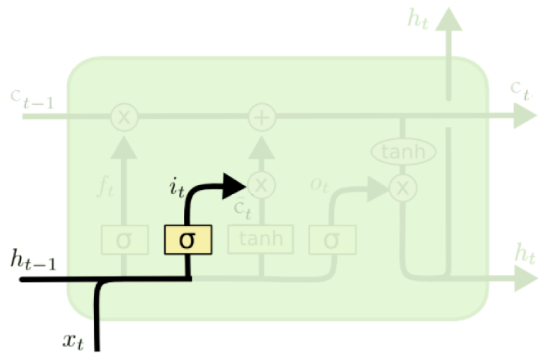
(Credit: Colah’s blog)
Vector of new candidate values#
A \(tanh\) layer creates a vector of new candidate values \(\tilde{c}_t\) to write to the memory cell.
\(\tilde{c}_t = tanh(W_{c}h_{t-1} + U_{c}x_t + b_c)\)
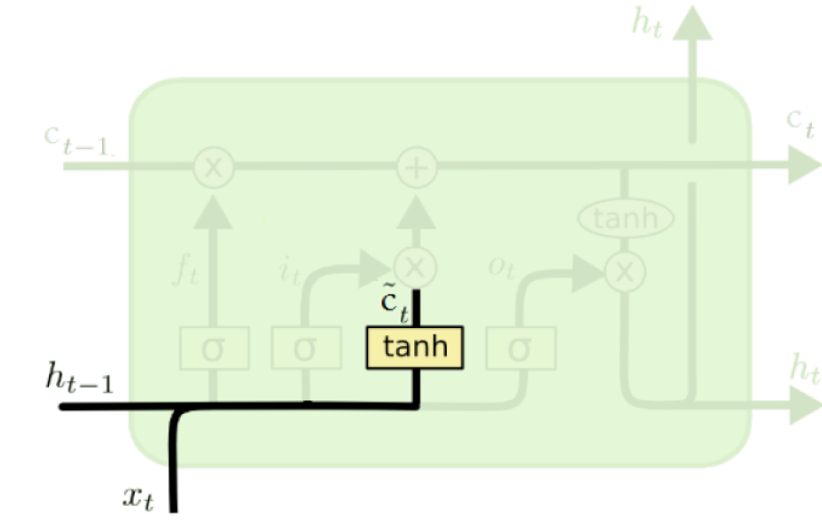
(Credit: Colah’s blog)
Update operation (memory cell update)#
The previous steps decided which values of the memory cell to reset and overwrite.
Now the LSTM applies the decisions to the memory cells.
\(c_t = f_t \odot c_{t-1} + i_t \odot \tilde{c}_t\)

(Credit: Colah’s blog)
Output operation#
The sigmoid layer, output gate, decides which values should be sent to the network in the next time step.
\(o_t = \sigma(W_{o}h_{t-1} + U_ox_t + b_o)\)
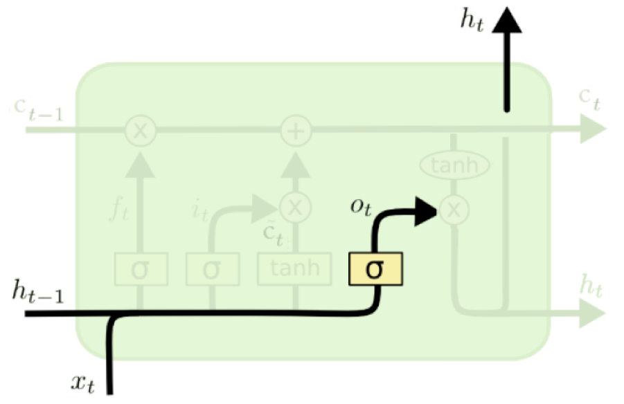
(Credit: Colah’s blog)
Output update#
The memory cell goes through \(tanh\) and is multiplied by the output gate
\(h_t = o_t \odot \tanh(c_t)\)
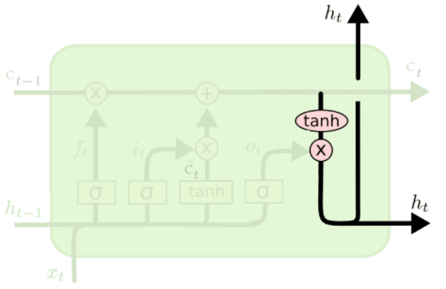
(Credit: Colah’s blog)
So an LSTM unit at one time step takes as input
the context layer
the hidden layer from previous time step
the current input vector
As output it generates
Updated context vector
Updated hidden vector
The nice thing is that the complexity in LSTMs is encapsulated within a the basic processing unit allowing us to maintain modularity and experiment with different architectures quite easily.
This modularity is the key to the power and widespread applicability of LSTMs!
Similar to RNNs it’s possible to stack LSTM layers or use it in a bidirectional setting.
There are other variants such as Gated Recurrent Units (GRU) which follow similar idea but are less complicated.
LSTMs: Confusing diagrams!!!#
LSTMs are not very intuitive.
Complicated combination of state in the past, observation at the moment and different ways to either forget the observation or keep it around.
Famous for confusing illustrative diagrams.
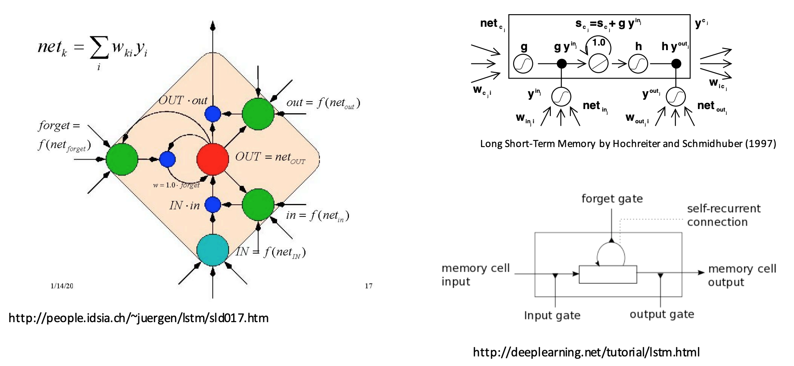
Let’s build LSTMs!!!#
Creating some data#
# sequence_len, batch_size, input_size
X = torch.randn(3, 4, 10)
X
tensor([[[-2.0929e+00, -8.1991e-01, -4.2104e-01, -9.6200e-01, 1.2825e+00,
8.7684e-01, 1.6221e+00, -1.4779e+00, -1.7018e+00, -7.4980e-01],
[-1.1285e+00, 4.1351e-01, 2.8917e-01, 2.2473e+00, -8.0364e-01,
-2.8084e-01, -4.2036e-01, 1.3111e+00, -2.1993e-01, 2.1895e-01],
[ 2.0451e-01, 5.1463e-01, 9.9376e-01, -2.5873e-01, 1.5118e-01,
1.0364e-01, -2.1996e+00, -8.8490e-02, -5.6120e-01, 6.7155e-01],
[ 6.9330e-01, -9.4872e-01, -1.1440e+00, 2.4362e-01, -5.6734e-02,
3.7841e-01, 1.6863e+00, 2.5529e-01, -5.4963e-01, 1.0042e+00]],
[[ 3.5068e-01, 1.5434e+00, 1.4058e-01, 1.0617e+00, -9.9292e-01,
-1.6025e+00, -1.0764e+00, 9.0315e-01, -1.6461e+00, 1.0720e+00],
[ 1.5026e+00, -8.1899e-01, 2.6860e-01, -2.2150e+00, -1.3193e+00,
-2.0915e+00, 1.2767e+00, -9.9480e-01, 1.2176e+00, -2.2817e-01],
[ 1.3382e+00, 1.9929e+00, 1.3708e+00, -5.0087e-01, -2.3244e+00,
1.2311e+00, -1.0973e+00, -9.6690e-01, 6.7125e-01, -9.4053e-01],
[-4.6806e-01, 1.0322e+00, -8.9568e-01, 1.1124e+00, -4.1684e-01,
-1.7106e+00, -3.2902e-01, 1.3966e+00, -9.9491e-01, -1.5822e-03]],
[[-5.5601e-01, -2.7202e+00, 5.4215e-01, -1.1541e+00, 7.7631e-01,
-2.5822e-01, -2.0407e+00, -8.0156e-01, -6.0270e-01, -4.7965e-02],
[ 5.3490e-01, 1.1031e+00, 1.3334e+00, -1.4053e+00, -5.9217e-01,
-2.5479e-01, -8.9886e-01, 8.1377e-01, 6.5323e-01, 6.5572e-01],
[-1.4056e+00, -1.2743e+00, 4.5128e-01, -2.2801e-01, 1.6014e+00,
-2.2577e+00, -1.8009e+00, 7.0147e-01, 5.7028e-01, 1.8790e+00],
[-9.1925e-01, 1.0318e+00, 1.4353e+00, 8.8307e-02, -1.2037e+00,
1.0964e+00, 2.4210e+00, 2.4489e-01, 1.8118e+00, -4.4241e-01]]])
Defining the LSTM module#
An LSTM is defined by torch.nn.LSTM module with the following parameters.
input_size: the number of features in x (e.g., size of the word embedding)hidden_size: the number of nodes in the hidden layernum_layers: number of recurrent layers
lstm_rnn = nn.LSTM(input_size=10, hidden_size=5, num_layers=2)
Forward propagation of LSTM#
Unlike RNN, LSTM module takes three inputs
the initial hidden state for each element in the batch (t=0)
initial cell state for each element in the batch
the input features (e.g., embeddings)
# h0 and c0 is optional input, defaults to tensor of 0's when not provided
output, (hn, cn) = lstm_rnn(X, (h0, c0))
# output = seq_len, batch_size, hidden_size (output features from last layer of LSTM)
print("output size: ", output.size())
output size: torch.Size([3, 4, 5])
This was not that that complicated but when we want to use it on text data it’s a quite involved process.#
Text classification using PyTorch and torchtext#
A lot of work in building LSTMs for text data goes into data preprocessing and getting the text into the suitable format.
There are a number of steps involved in data preprocessing.
[ ] Data splitting (train, valid, test)
[ ] Loading the data files
[ ] Tokenization
[ ] Creating a vocabulary: Creating a list of unique words
[ ] Numericalization: Converting text to a set of integers.
[ ] Word vectors
[ ] Embedding lookup
[ ] Batching
Text preprocessing#
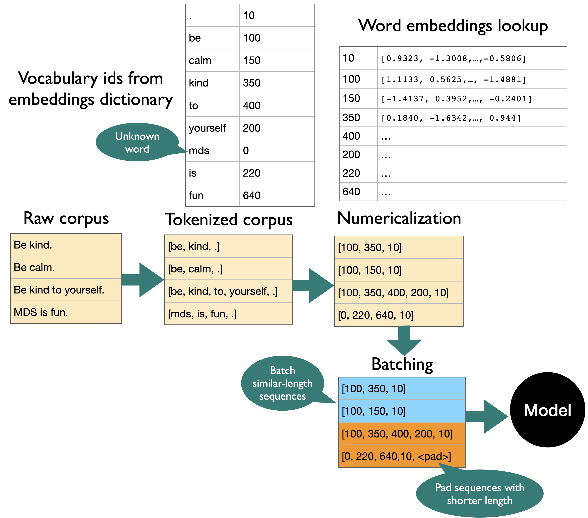
batch_first=True#
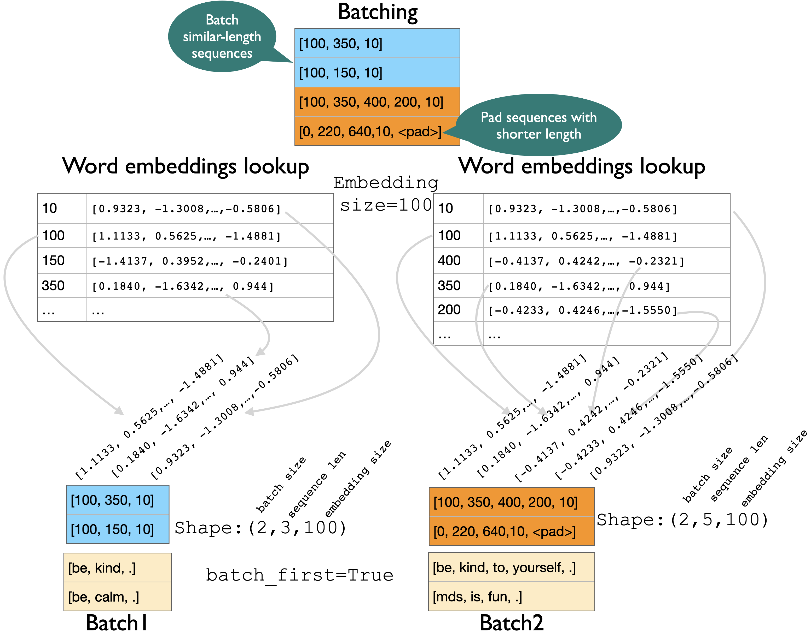
batch_first=False (default)#
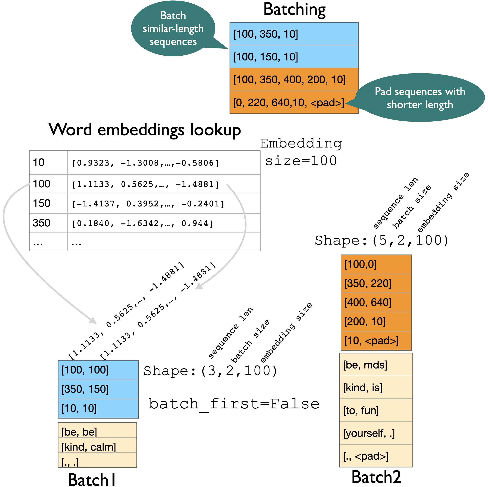
torchtext#
There is a library called
torchtextto help us with these tasks.To use it You will first need to install
torchtextin the environment.
pip install torchtext
I’ve included an adapted version of
torchtexttutorial from MDS-CL as an appendix.You can also included a demo of text classification using LSTMs as an appendix.
RNNs vs. LSTMs#
RNNs suffer from the problem of vanishing gradients.
Vanishing gradients lead to difficulty in training.
We saw that LSTMs mitigate this problem by introducing a cell state and managing the context better.
They are better suited for sequence modeling and capturing long-distance dependencies.
(Credit: Colah’s blog)
There are tons of applications of LSTMs.
Wiki page on LSTM applications#
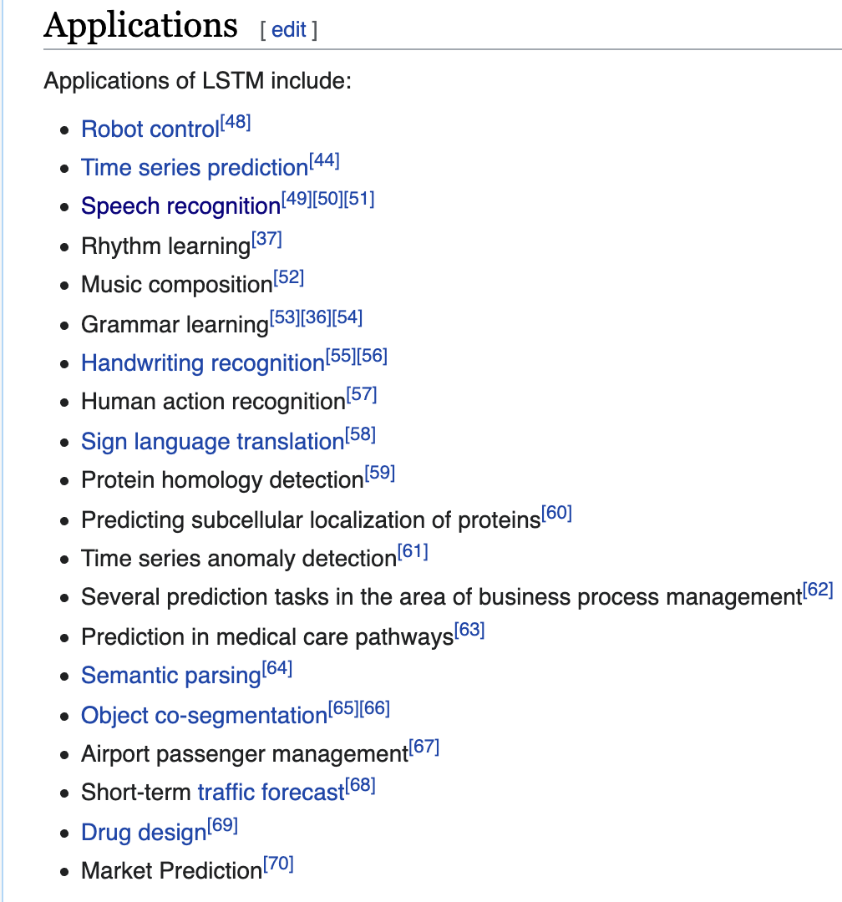
(Credit: Learning to execute)
LSTM for image captioning#
(Credit: LSTMs for image captioning)
music2dance#
Dance with Melody: An LSTM-autoencoder Approach to Music-oriented Dance Synthesis
Follow the Music: Dance Motion Synthesis Corresponding to Arbitrary Music (UBC researchers)
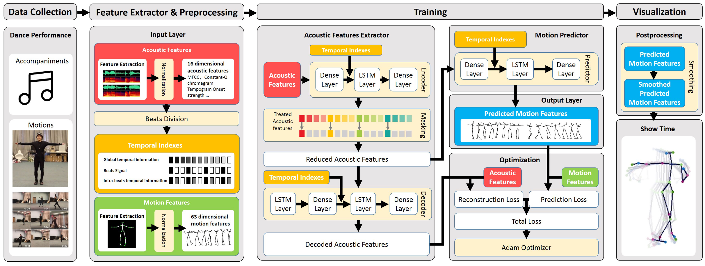
❓❓ Questions for you#
iClicker cloud join link: https://join.iclicker.com/4QVT4
Exercise: Select all of the following statements which are True (iClicker)#
(A) Input to an RNN or LSTM is a 3-D tensor with three components: sequence length, batch size, and input size.
(B) In the forward pass of LSTMs, in addition to the previous hidden state we also pass the previous cell state.
(C) In LSTMs, creating batches with sequences of similar lengths might minimize padding.
(D) HMMs can handle variable length sequences but LSTMs cannot.
(E) It’s almost always a good idea to use LSTMs to model text data over bag-of-words models, as they encode sequential information and are likely to beat bag-of-words models.
Exercise: V’s Solutions!
(A) True
(B) True
(C) True
(D) False
(E) False
Exercise: Questions for discussion#
Suppose you are using pre-trained embeddings to train a sentiment analysis model with LSTMs on a small corpus shown below. Now given a test sentence “amazing”, would you expect the model to classify the sentence correctly? Why or why not? State your assumptions.
text |
sentiment |
|---|---|
what a wonderful movie ! |
positive |
boring … fell asleep a couple of times |
negative |
astonishing ! ! |
positive |
In text generation using LSTMs or RNNs, why it might be a good idea to sample from the distribution rather than picking the next word with highest probability?
Exercise 8.2: V’s Solutions!
Most likely yes. Although the word amazing does not occur in the training corpus, we would be incorporating the information in the model, via pre-trained word embeddings, that the word amazing is similar to wonderful and astonishing which are associated with positive sentiment.
To add novelty.
Final comments and summary#
Important ideas to know#
RNNS and LSTMs are well suited for sequence modeling tasks.
They are widely used models to process sequential data in deep learning community and have a wide range of applications.
Training RNNs is hard because of vanishing and exploding gradients.
LSTMs mitigate the problem by introducing a mechanism to selectively control the flow of information in the network.
Important ideas to know#
LSTMs use gates to control the flow of information.
They maintain a separate cell or context state in addition to the hidden state.
Maintaining cell or context state allows for efficient training with back-propagation through time.
Important ideas to know#
The shapes of weight matrices (\(U, V, W\)) in vanilla RNNs.
Forward pass of RNNs and LSTMs.
The shapes of input, output, and hidden and cell states of LSTM.
Important ideas to know#
If you want to use LSTMs for text data a number of steps are involved before passing text data to LSTMs including
tokenization
embedding lookup
numericalization
batching
padding
We’ll use a library called
torchtextto help us with some of the preprocessing tasks.
RNN resources#
A lot of material is available on the web. Here are some resources that were useful for me.
Geoff Hinton’s short talk and lecture on LSTMs